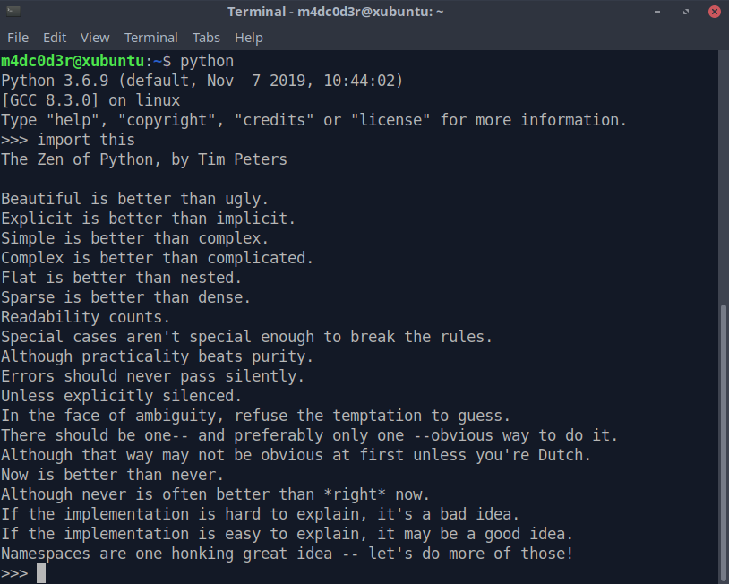

Guildo van Rossun é um matemático e programador de computadores holandês, ele é o criador da linguagem de programação python!
Guido van Rossum estudou matemática na Universidade de Amsterdã, naquela época conheceu as linguagens ALGOL 60 e Pascal. Havia um grupo de estudantes de física cuja linguagem favorita era Fortran, então havia uma séria discussão sobre ALGOL, Pascal e Fortran.
Guido van Rossum obteve seu mestrado na Universidade de Amsterdã em 1982. Mais tarde, trabalhou em vários institutos de pesquisa. Trabalhou no desenvolvimento da linguagem de programação ABC, descendente da linguagem Simula.
Em 1999, Van Rossum submeteu uma proposta de financiamento a DARPA chamada de Computer Programming for Everybody (Programação de computadores Para Todos), na qual ele definiu seus objetivos para a linguagem Python:
uma linguagem fácil e intuitiva enquanto que ainda sendo tão poderosa quanto as maiores competidoras
Código aberto, para que qualquer um possa contribuir para o desenvolvimento
código que fosse tão inteligível quanto inglês
adequada para tarefas diárias, permitindo um tempo de desenvolvimento mais curto
Muitas dessas ambições foram realizadas desde então. Python cresceu e se tornou uma linguagem de programação popular, particularmente no meio da Internet.
Na comunidade Python ele ainda continua a supervisionar o processo de desenvolvimento da linguagem, tomando decisões quando necessário. Entretanto, em julho de 2018, ele anunciou que estaria se afastando desta função devido a desentendimentos com a equipe de desenvolvimento da linguagem Python. A discussão se deu por conta de discordâncias entre Rossum e a equipe de desenvolvedores, relacionada às novas propostas de atualização que romperia com os padrões de sintaxe da linguagem. A equipe alegava que a sintaxe não ficaria tão boa para os padrões de Python. De acordo com equipe do Python no Brasil, Guido van Rossum se afastou somente desta função mas continua à frente do projeto.
O Zen do Python é uma coleção de 19 princípios orientadores, na forma de poema, com uma série de aforismos, para escrever programas de computador que influenciam o design da linguagem de programação Python.
Guido realça os princípios de sua linguagem
